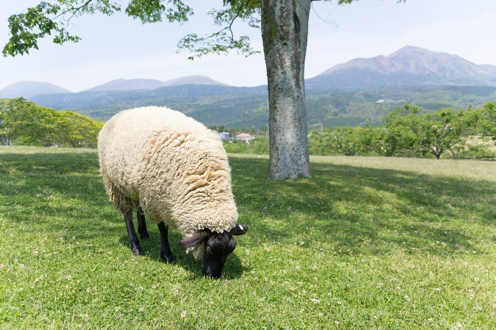

もはや怒りや憤りといった感情はなくなってしまったかのように思えた。
それはこの世界の人間や事物が自分のために存在するのではなく、それぞれが独立して存在しているからだ。
それはごく当たり前のことなのだが、心のどこかで自分のために存在し得るものしかこの世界にはないと考えていたのだろう。
でも、考えを改めてからは人に文句を言われようが馬鹿にされようが、関係のないように感じた。危害を加えられない限り、その対象を憎んだりしない。むしろ、かまってくれてどうもありがとうと思うようになった。それは一見ひねくれた性格のようだが、私はいちいち感謝した。
ある夜、私は腹が痛かった。
近頃よく腹を下すようになった。その原因は稼ぎの少ない仕事のストレスか、独り身による不安か。それとも先の見えない将来からか。
グゥと鳴る腹の音と同時に、胃が締めつけられた。トイレに駆け込む。トイレットペーパーの残りを数え、そろそろ買わなきゃなと思う。虚しい夜の始まりだ。
長い腹痛との闘いを終え、トイレから出た私はホットミルクでも飲もうかと牛乳をコップに入れ、電子レンジで温めた。少し湯気が出る程度にして、それを飲んだ。
時計の秒針の音だけが鳴り響く寂しい部屋で、一人目を瞑った。
すると、私は昔からの癖である空想を始めた。
空想の中には、ある1匹の羊がいた。
その羊はとても間抜けな顔をしていた。そうだな……名前はマヌケにしよう。弱そうなマヌケはある小さな柵の中にいた。すると、柵の外から声がする。
「おい。何やってんだ？」
これは見るからにできそうな羊である。
屈強な筋肉。鋭い目つき。外見から漂う優秀なオーラ。首には高そうな金の時計を下げている。そう、彼こそがKing of Sheepである。名はキングにしよう。
「ここを跳び越えられないから、この中にいるんだ」
マヌケは小さな声でそう答える。
「ふん……あのなぁ、羊でも努力は必要なんだ。その中じゃつまらないだろ？ 早く広い世界を見たいだろ？」
まさに我こそが正義だという顔でそう言ってくる。
でもマヌケは意外とこの柵の中が気に入っていた。だって朝起きると朝日が見えるし、夜には綺麗な月が出る。それだけでマヌケは十分だった。目まぐるしく回る素晴らしい世界なんかよりも、自分の満足感を大事にしたかった。
「いや、そういうわけじゃないんだ。ボクはここにいたいん……」
「よし、俺が柵の跳び方を伝授してやろう」
マヌケの顔は一層弱々しくなった。
それからというもの、キングはどれだけ暇なんだと思うほどマヌケに跳び方を教えにやって来た。マヌケは運が悪いだけだと自分に言い聞かせながら、キングの熱い指導を受けた。
しかし、キングも徐々にマヌケの上達のなさに呆れてきたようで、遂に怒り出してしまった。
「いつまで経っても跳べないじゃないか！ このマヌケが！」
マヌケは「そもそも跳ぶ気がないからね……」と思いつつも、ただただ謝った。
キングが帰った夜、マヌケは考えていた。なんで自分の意志を人の自己満足によって変えなきゃならないんだと。
しかしマヌケの方こそ、その意思をはっきりと伝えないことが悪いんだと分かっていた。マヌケは自分の意志の弱さを責めるようになっていた。
翌朝、いつも跳び方を教えに来る時間になってもキングはやって来なかった。マヌケは不思議に思った。
遂に諦めたのか？ マヌケは少し喜びつつもキングの安否を心配した。
ちょうどその時、遠くからキングの叫び声が聞こえた。ただならぬ予感がしたマヌケは必死に目を凝らした。
すると、キングが複数の人間たちに羊狩りに遭っているではないか！
焦ったマヌケは、柵の中をぐるぐる回って考えた。
「どうしよう？このままだとキングが……」
その時、マヌケは思った。自分のためだけに生きるということは目の前で苦しむ友すら救えないことなんだと。
そう考えた時、心の中である決意をした。
この柵を跳び越えるのは自分が広い世界を見るためじゃない。友を救うため、それだけのために跳び越えようと。
マヌケは助走をつけた。キングに教えてもらったように、柵の1メートル手前で足に力を入れ、まるで体が伸びるように跳んだ。思わずマヌケは目を閉じた。
すると、柵に足をぶつけながらも柵の外側まで跳んだのだった。
マヌケは遂に柵を跳び越えた。
そして、今までとは別人のようにキングのもとへ走りだした。その時、もう死んでもいいとさえ思っていた。それは何故だか分からない。暑苦しいキングに命を張ろうなんて一度も思ったことはないのに。
キングの姿が近づいてくる。いよいよ覚悟したマヌケであったが、徐々にその顔から勇ましさが消えていった。キングはいつもの顔で立っていた。
「あいつら、金時計だけ取って逃げるとはな……。この俺に恐れをなしたか」
キングはそう言って、マヌケの顔を見た。マヌケは一気に全身の力が抜け、その場に崩れた。
「ボクがどれだけ心配したか分かってんの！？」
珍しく大きな声でそう言った。
でも、キングと一緒に笑い合えたのはあの柵を跳び越えたからであった。
我ながらベタな話を空想するなと思いながら、私はホットミルクを飲み干した。
そしてベッドの中に潜り、憂鬱な明日のことを考えた。また孤独な闘いが始まるんだ……。おっと、いけない、いけない。考えごとをしてしまうと、また眠れなくなる。
私はいつものように羊を数えながら、目を瞑って夢の世界へ向かうことにした。
するとその世界では、快晴の空の下、多くの羊たちが元気よく柵を跳び越えていたのだった。